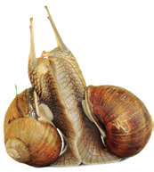
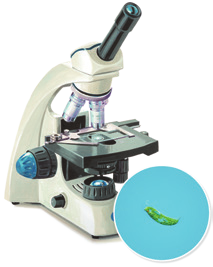
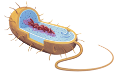
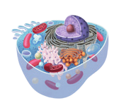

Elabora una relación de estímulos que provocan respuestas de algún tipo, tanto en las plantas como en los animales.
Presenta de forma visual dos seres vivos que representan cada una de las siguientes formas de alimentación: herbívora, carnívora, omnívora y saprófita. Indica cuáles de ellos son autótrofos y cuáles heterótrofos.
¿Qué tipo de nutrición es la fotosíntesis? ¿Qué obtienen las plantas con este proceso?
¿Qué diferencia existe entre la fotosíntesis y la quimiosíntesis?
Indica con qué función viral asociarías estas acciones.
a. Produce flores.
b. Bebe agua.
c. Huye del depredador.
d. Defeca.
e. Emigra.
f. Cuida a las crías.
¿Sería posible un planeta de seres vivos exclusivamente heterótrofos? Explica tu respuesta.
Busca varios ejemplos de respuestas de las plantas a estímulos luminosos. Utiliza diferentes fuentes e indícalas.
Distinga la reproducción sexual de la asexual. Pon ejemplos de seres vivos que se reproduzcan de una y de otra forma.
Aristóteles (384-322 a.C.) pensaba que algunos seres vivos procedían de sus progenitores. Creía que se formaban a partir del barro, del agua o de la carne putrefacta. Esta idea, conocida como teoría de la generación espontánea, persistió hasta el siglo XVII, fecha en la que Francesco Redi (1626-1697) demostró que los gusanos que parecían surgir de la carne putrefacta eran en realidad larvas de mosca. Louis Pasteur (1822-1895) dio el golpe final con su experimento de la esterilización. Busca información sobre ambos experimentos. ¿Qué impacto tuvieron en la salud? Busca y contrasta tus fuentes y explica cómo cambiaría nuestra vida a día sin estos descubrimientos.
Un elefante, un pino y un lombriz presentan reproducción sexual, cada uno con características específicas. Investiga y explica cuáles son esas particularidades. Cita las fuentes consultadas.
Los caracoles son hermafroditas: cada individuo tiene, a la vez, testículo y ovario. Sin embargo, se aparean unos con otros intercambiando los espermatozoides. Elabora una hipótesis que explique este hecho.

Caracoles

Microscopio con espécimen

Diagrama de célula bacteriana

Estructura celular